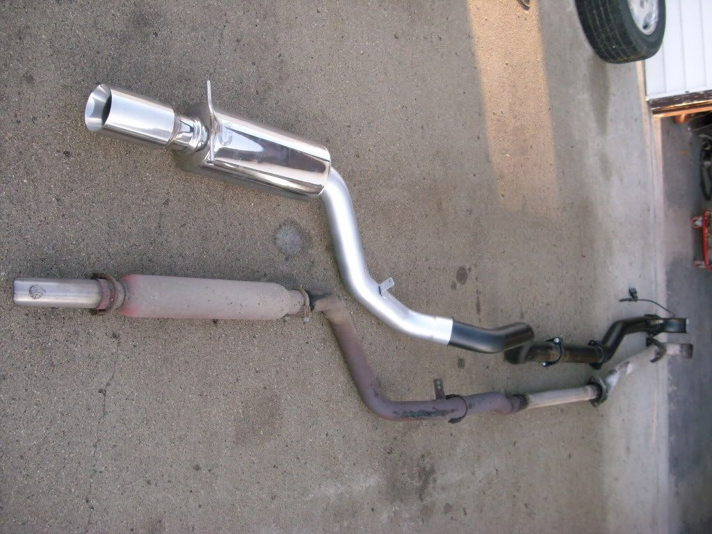
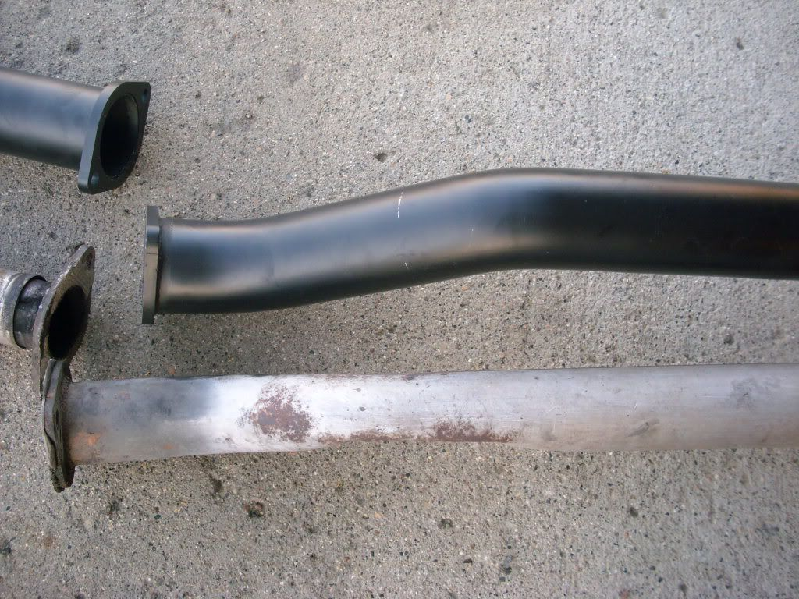
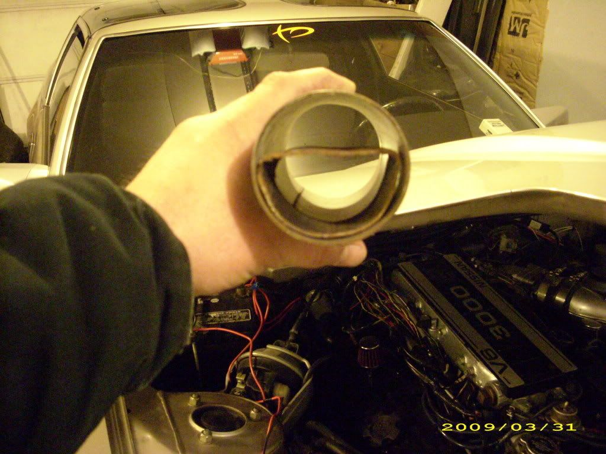

-
If you want to hear a NA VG (technically a VE30DE) go on youtube and look for "magnaflow muffler maxima" find a video by I think his name is "indiextronic" or some shit. On maxima.org that's Pearl93SE. Great sounding car though it does sound a little ricey. I am aiming for a similar sound with my car, I have the magnaflow muffler and some 304 already. Only problem is finding a good shop in Florida. LHT Performance (very nice Honda/Acura shop that is active on Tampa Racing quoted me over $200) though I really can't blame them, they say they have a $5000 tig welding machine and the guy went to school for 5 years to learn to use it, they've been around for 13 years too. -
I have NEVER heard a NA vg with a stock motor that does not sound ricey/raspy above 4k rpm.Bolt on, fast, z31. You can only pick two.
Old weaksauce numbers: 391hp/433tq

-
Heres a M30…http://s41.photobucket.com/albums/e295/ … NY2002.flvTurboDreams wrote: If you want to hear a NA VG (technically a VE30DE) go on youtube and look for "magnaflow muffler maxima" find a video by I think his name is "indiextronic" or some shit. On maxima.org that's Pearl93SE. Great sounding car though it does sound a little ricey. I am aiming for a similar sound with my car, I have the magnaflow muffler and some 304 already. Only problem is finding a good shop in Florida. LHT Performance (very nice Honda/Acura shop that is active on Tampa Racing quoted me over $200) though I really can't blame them, they say they have a $5000 tig welding machine and the guy went to school for 5 years to learn to use it, they've been around for 13 years too.
Maximas sound quite a bit different than Z31s, they have shitty manifolds that are about 100x worse than the Z31's…
Matt89 wrote: I have NEVER heard a NA vg with a stock motor that does not sound ricey/raspy above 4k rpm.
Again, gets a bit raspy over 4k..lol- VG30DET (HE341) 86 300ZX - 1982 280ZX Turbo - Headered NA 1986 300ZX 2+2 - 2000 Xterra - -
go into st pete and talk to the guys @ rainbow exhaust on 38th st, they sold me an exhaust for my FC GTU full 3 1/4" from my racing beat header all the way back into a magnaflow ceramic can. costed me all of $60.TurboDreams wrote: If you want to hear a NA VG (technically a VE30DE) go on youtube and look for "magnaflow muffler maxima" find a video by I think his name is "indiextronic" or some shit. On maxima.org that's Pearl93SE. Great sounding car though it does sound a little ricey. I am aiming for a similar sound with my car, I have the magnaflow muffler and some 304 already. Only problem is finding a good shop in Florida. LHT Performance (very nice Honda/Acura shop that is active on Tampa Racing quoted me over $200) though I really can't blame them, they say they have a $5000 tig welding machine and the guy went to school for 5 years to learn to use it, they've been around for 13 years too.
also, get on Tampa Racing and look up Genium Performance, they used to do exhausts and they might still do them, call em and ask for Matt, tell em Zack(me) or Eric(ex co-worker) sent you if you ever decide to go there (btw Genium is also in st pete located off of 66th st)
-
I might have to check rainbow out, they were one of my top 3 choices after a quick search on tamparacing.
I googled genium and I'm liking their site, they seem very straightforward and honest (my two main concerns) site is http://www.geniumperformance.com/ in case anyone else needs to know.
Also, michaelp from what I've heard maxima exhaust manifolds flow very well for logs, I highly doubt they flow 1% of what a Z31 exhaust manifold does. Our intake manifolds? You make me laugh, the maxima intake manifold flows better than anything except debatably a pathfinder manifold stock, gutted Z31 vs J30 stock probably favors the Z31, not a whole lot of info is available on porting a J30 manifold. I intend to do it as soon as I get a new dremel. -
CM 3 inch

stock down pipe VS 3 inch

This is a piece of 3 inch exhaust pipe with section of the part that goes under the crossmember inside for size comparison.
Black 1986 300zx Turbo coupe (Chuki)
http://z31performance.com/showthread…86-Turbo-Coupe
----------------------------------------------------------------------------------------------------------------
Pewter 1986 300zx N/A 2 Turbo 2+2 (Chuki)
http://z31performance.com/showthread…9;s-1986-300zx

Copyright © 2006–. All rights reserved. Privacy Policy